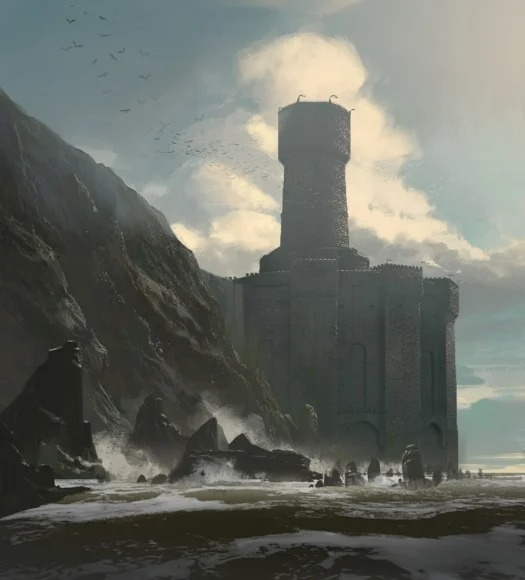
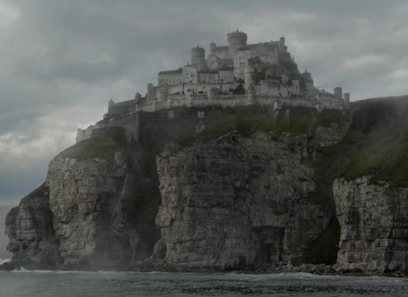
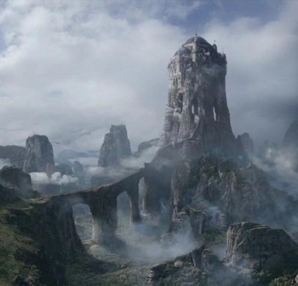
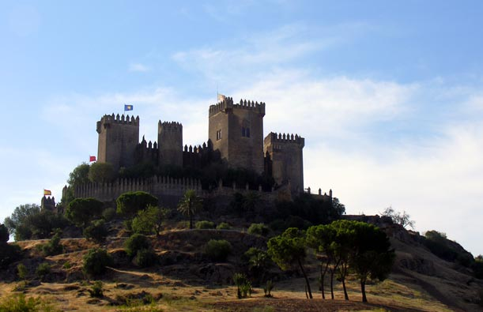
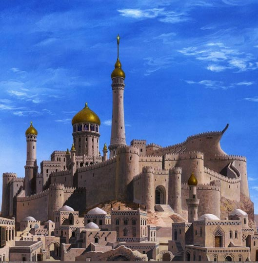

ACCALMIE
MAISON BARATHEON
RéGION: TERREs DE L'ORAGE
source: Storm's End by Logan Feliciano © Fantasy Flight Games

CASTRAL ROC
MAISON LANNISTER
région: terres de l'ouest
source: https://gameofthrones.fandom.com/fr/wiki/Castral_Roc
PEYREDRAGON
MAISON TARGARYEN
région: baie de la néra
source: HBO

LES EYRIÉ
MAISON ARRYN
région: le val
source: https://gameofthrones.fandom.com/wiki/Eyrie

HAUTJARDIN
MAISON TYRELL
région: le bief
source: photo of Philip Capper ©

LANCEHÉLION
MAISON MARTELL
région: dorne
source: Sunspear by Ted Nasmith ©
PYKE
MAISON GREYJOY
région: îles de fer
https://gameofthrones.fandom.com/wiki/Pyke
VIVESAIGUES
MAISON TULLY
région: les conflans
source: HBO
WINTERFELL
MAISON STARK
région: le nord
source: HBO, https://gameofthrones.fandom.com/fr/wiki/Winterfell


Le meli-melo precedemment vu montre les differents chateau et lieu de vie des Grandes Maisons de Westeros, dans la serie Game Of Thrones,
afin d'accompagner les sources, j'ai crée sur cette page un petit slider qui montre les noms des chateau, leurs localité et la maison qui les possèdent
MELI MELO ➔